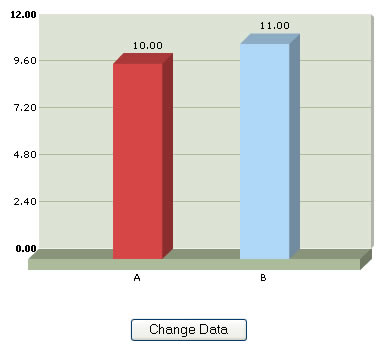
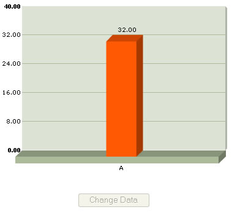

| FusionCharts, JavaScript and updateChartXML Method |
You can change the data of a chart at client side using the updateChartXML method of chart. Consider the following code contained in ChangeDataXML.html: Code examples discussed in this section are present in Download Package > Code > JavaScript > Basics folder. |
| <HTML> <HEAD> <TITLE>FusionCharts Free & JavaScript - Updating chart using setDataXML() Method</TITLE> <SCRIPT LANGUAGE="Javascript" SRC="../../FusionCharts/FusionCharts.js"></SCRIPT> <SCRIPT LANGUAGE="JavaScript"> /* * updateChart method is called, when user clicks the button * Here, we generate the XML data again and build the chart. * @param domId domId of the Chart */ function updateChart(DOMId){ //using updateChartXML method defined in FusionCharts JavaScript class updateChartXML(domId,"<graph><set name='A' value='32' /></graph>"); //Disable the button this.document.frmUpdate.btnUpdate.disabled = true; } </SCRIPT> </HEAD> <BODY> <div id="chart1div"> FusionCharts </div> <script language="JavaScript"> var chart1 = new FusionCharts("../../FusionCharts/FCF_Column3D.swf", "chart1Id", "400", "300"); chart1.setDataXML("<graph><set name='A' value='10' color='D64646' /><set name='B' value='11' color='AFD8F8' /></graph>"); chart1.render("chart1div"); </script> <form name='frmUpdate'> <input type='button' value='Change Data' onClick="javaScript:updateChart('chart1Id');" name='btnUpdate'> </form> </HTML> |
In the above code, we're first creating a Column 3D chart with DOM Id as chart1Id. We initially provide the following data to the chart and ask it to render: <graph><set name='A' value='10' color='D64646' /><set name='B' value='11' color='AFD8F8' /></graph> Thereafter, we're creating a button, which when clicked would update the chart with new XML data. The button calls the updateChart() JavaScript function when clicked. The updateChart() JavaScript function has the following code to update the chart: |
| function updateChart(DOMId){ //using updateChartXML method defined in FusionCharts JavaScript class updateChartXML(domId,"<graph><set name='A' value='32' /></graph>"); //Disable the button this.document.frmUpdate.btnUpdate.disabled = true; } |
Here, we first get a reference to the chart using its DOM Id - passed as a parameter. Using this domId, we simply call updateChartXML() method (defined in FusionCharts JavaScript class) and pass the new XML data to this function. This method forces the chart to read the new XML data and redraw accordingly. Finally, we disable the button, as it has already been clicked once. When you now view this page, you'll first see a Column Chart with 2 columns as under: |
|  |
| When you click on the button, you'll get the following chart, and also the button is now disabled: |
|  |
The entire thing happens at client side, without any page refreshes or calls to server. If you wish to update the dataURL of the chart using JavaScript, you cannot do so using FusionCharts Free. This feature is present only in FusionCharts v3. |